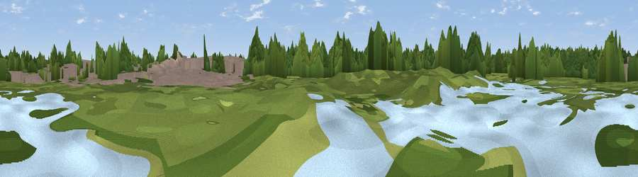

Viewpoint near Sydenham
#46106 in England · top 94% of its area beats it · near Sydenham · path 188 mWhere it is
The exact computed spot (TQ 35589 68479). Click the marker for map links.
Public access: the nearest public right of way is about 188 m away — the final stretch may cross private land. Computed from Natural England's CRoW access layer and OpenStreetMap rights of way — not the legal definitive map. Always verify locally.
The view, rendered

A 360° render of this exact spot computed from the terrain model, tree cover and land cover — summer colours, afternoon light, calibrated against photographs of famous viewpoints. Real trees, hedges and buildings will differ in detail.
The panorama
Grey silhouette: terrain skyline in each direction (720 bearings, Earth curvature and refraction included). Dashed green: skyline with trees (+15 m) and buildings (+8 m) as obstacles. Blue strip: how far the ground is visible on each bearing.
Where the view opens
Wedge length = distance to the farthest visible ground on that bearing (vegetation-aware). Rings at 10, 25 and 50 km.
What fills the view
55% woodland · 27% built-up · 18% grassland
Angular shares of the visible panorama (visual magnitude), not map area. Landscape diversity 0.43 (0–1 Shannon).
Key numbers
More beautiful places nearby
The staircase of upgrades: each row has a higher view potential than everything closer. Driving times are estimates from straight-line distance, calibrated against real road routing — check an actual route before setting out.
| Place | Direction | Drive | Score |
|---|---|---|---|
| Viewing mound | SW · 1 km | ~2 min | 15.0 |
| Viewpoint near Sydenham | WNW · 3 km | ~6 min | 23.8 |
| Viewpoint near Sydenham | WNW · 3 km | ~7 min | 24.3 |
| Viewpoint near Addington | S · 4 km | ~9 min | 27.1 |
| Viewpoint near Addington | SSE · 4 km | ~10 min | 32.7 |
| Viewpoint near Croydon | SSW · 5 km | ~10 min | 34.6 |
| Viewpoint near Woldingham | SSE · 11 km | ~22 min | 40.1 |
| Viewpoint near Tatsfield | SSE · 14 km | ~25 min | 53.1 |
51.39914, -0.05229 · source: osm viewpoint · position refined by local search. Computed location — check access rights before visiting.